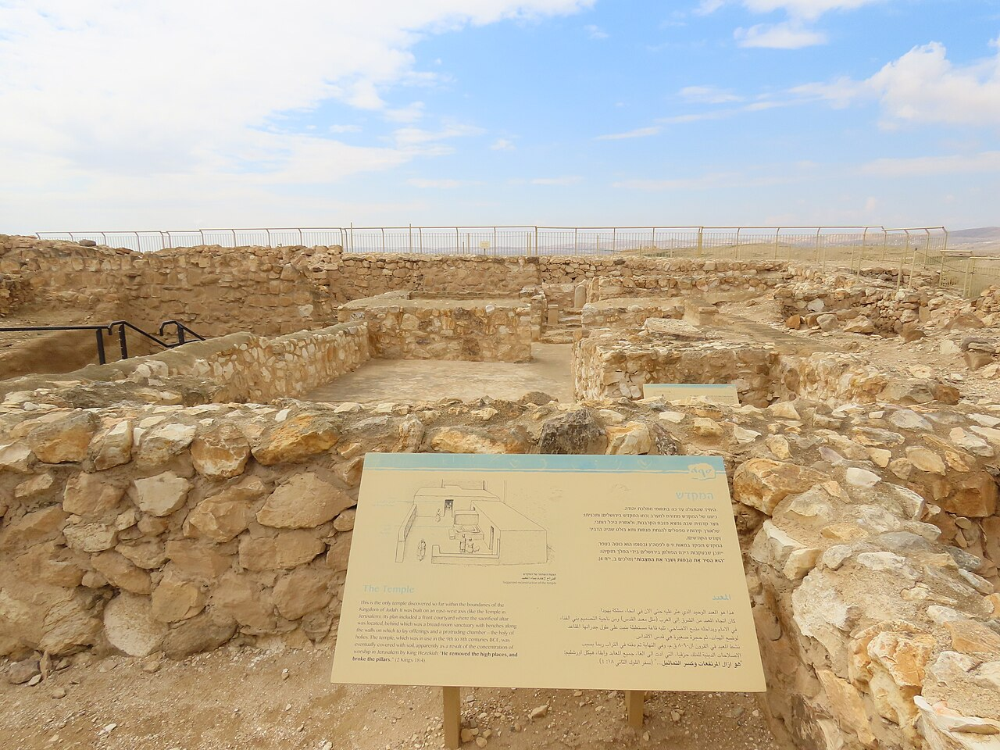

Arad Temple

A complete Judahite temple inside the fortress at Arad, found by Yohanan Aharoni: an outer court, a main hall, and a holy of holies with a stone altar, two incense altars, and a standing stone. It was deliberately dismantled and buried — its altars laid on their sides and covered with earth — most likely during the reforms of Hezekiah or Josiah.
Biblical Significance
Here is the reform in action: a working temple outside Jerusalem, carefully closed down rather than smashed, when Judah's kings decided worship belonged in one place. The buried altars are the physical footprint of 2 Kings 18 and 23 — kings who took God's law seriously enough to shut a temple down.
Interpretations
Scholars agree the temple is a genuine Judahite sanctuary deliberately dismantled; debate concerns when — Hezekiah’s reform or Josiah’s — and whether the burial was reverent or punitive.